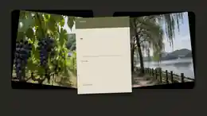

포도
GRAPE품종과 수확일, 보관 방법을 파는 분께 여쭙는다. 같은 안성산이어도 농가와 출하 시기에 따라 맛이 다르다. 캠벨·거봉·샤인머스캣은 사실상 다른 과일이다.
고르는 법 ▶ 06 SEASON PICK
MARKET
국밥의 여운을 집으로
글 · 사진 [에디터명] 2026. 08. 30

한 그릇이 여행의 시작이었다면, 장바구니는 그 맛을 집으로 이어가는 방법이다.
그리고 9월은 명절 선물 시즌으로 넘어가는 달이다. 안성마춤 다섯 품목은 공교롭게도 명절 선물 목록과 그대로 겹친다. 여행길에 눈으로 봐 두면 9월이 한결 편해진다.
01 / BASKET
다섯 품목을 한 번에 훑고, 선물이라면 무엇을 더 확인할지 정리했다.
품종과 수확일, 보관 방법을 파는 분께 여쭙는다. 같은 안성산이어도 농가와 출하 시기에 따라 맛이 다르다. 캠벨·거봉·샤인머스캣은 사실상 다른 과일이다.
고르는 법 ▶ 06 SEASON PICK포장지의 생산 정보와 도정일을 본다. 국밥에서 국물만큼 밥이 중요하다는 걸 알게 된 뒤라면 이 습관이 생긴다. 소비 속도를 생각해 양을 고르는 게 신선하게 먹는 요령이다.
05 PAIRING의 초무침 재료다. 늦여름부터 나오기 시작한다. 고를 때는 무게를 본다. 같은 크기라면 무거운 쪽이 수분이 많다.
써 보기 ▶ 05 PAIRING 배·오이 초무침안성인삼농협이 별도 직매장을 운영할 만큼 자리 잡은 품목이다.

02 / PLACE
품목과 장소를 섞지 않고, 장보기 동선을 세 곳으로 따로 정리했다.
MARKET DAY
채소와 과일 사이에 생활용품 좌판이 섞여 선다. 다만 모든 물건이 안성산은 아니다. 지역 농산물을 찾는다면 원산지와 생산자를 확인해야 한다.
9월 주말 장날12일(토) · 27일(일)
주소발행 전 정확한 주소 확인
LOCAL FOOD
곡류·채소·과일·축산물·가공식품이 있다. 농가가 직접 포장하고 직접 가격을 붙여 내놓는 구조라 봉지마다 이름이 있다. 입점 품목과 재고는 날마다 달라진다.
주소안성시 고수1로 43
영업시간 · 휴무발행 전 확인
GINSENG · LOCAL FOOD
같은 직매장 구조. 이름대로 인삼 품목이 강한지 여부와 구체적인 특징은 현장에서 확인해 반영하는 항목이다.
주소공도읍 서동대로 4469
영업시간 · 휴무발행 전 확인
“하나를 고르는 건
결국 누군가를 고르는 일이다.”
03 / SHOPPING TIPS
8월 말 신선식품은 이동 시간이 곧 품질이다.
시장에서는 눈으로만, 직매장에서 몰아서, 차로 바로.
가격과 재고는 그날 그 자리에서 확인한다.
이 지면에는 가격을 적지 않았습니다. 품목·농가·출하 시기에 따라 매일 달라지기 때문입니다. 방문 당일 현장에서 확인해 주세요.